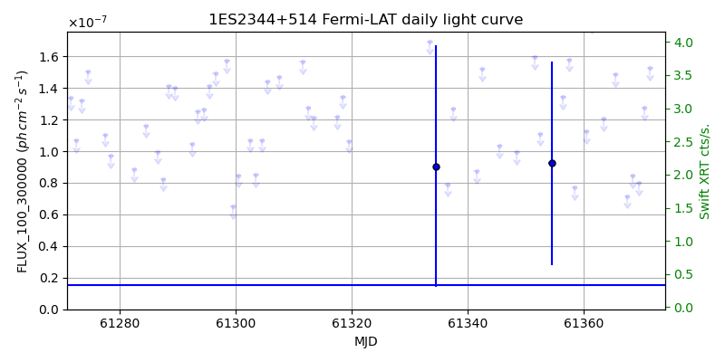
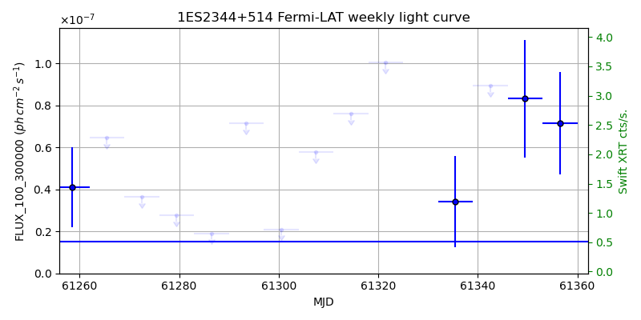
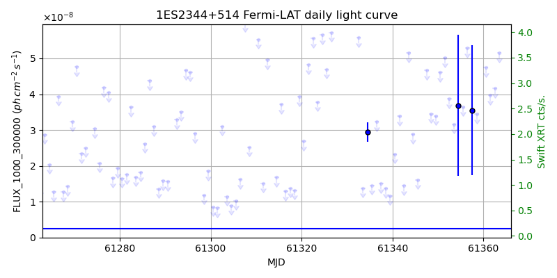

LAT Lightcurve site: https://fermi.gsfc.nasa.gov/ssc/data/access/lat/msl_lc/source/1ES_2344p514
Swift site: https://www.swift.psu.edu/monitoring/source.php?source=1ES2344+514
NED: Query
Time of last update of this page: UT: 2026-11-20 16:32 (MJD: 61364.689)
| Property | Value |
|---|---|
| R.A. | 23:47:04.80 |
| Dec. | 51:42:18.0 |
| z | 0.044 |
| 3FGL SpectrumType | PowerLaw |
| 3FGL PL Index | 1.78 |
| 3FGL Flux_100_300000 | 1.51e-08 1 / (s cm2) |
| 3FGL Flux_1000_300000 | 2.46e-09 1 / (s cm2) |
| 3FGL Flux >200 GeV | 3.83e-11 1 / (s cm2) |
| 3FGL Extrap. Crab >200 GeV | 0.16 |
| 3FGL Flux After EBL Absorption >200GeV | 2.94e-11 1 / (s cm2) |
| 3FGL EBL Crab Fraction >200GeV | 0.12 |

| MJD | dMJD | Flux | dFlux | Frac3FGL | FracCrab>200GeV | EBLFracCrab>200GeV |
|---|---|---|---|---|---|---|
| 61359.50 | 0.50 | 2.68e-07 | 0.00e+00 | 0.00 | 0.00 | 0.00 |
| 61360.50 | 0.50 | 1.13e-07 | 0.00e+00 | 0.00 | 0.00 | 0.00 |
| 61361.50 | 0.50 | 1.82e-07 | 0.00e+00 | 0.00 | 0.00 | 0.00 |
| 61362.50 | 0.50 | 3.88e-07 | 0.00e+00 | 0.00 | 0.00 | 0.00 |
| 61363.50 | 0.50 | 1.21e-07 | 0.00e+00 | 0.00 | 0.00 | 0.00 |

| MJD | dMJD | Flux | dFlux | Frac3FGL | FracCrab>200GeV | EBLFracCrab>200GeV |
|---|---|---|---|---|---|---|
| 61328.50 | 3.50 | 6.41e-07 | 0.00e+00 | 0.00 | 0.00 | 0.00 |
| 61335.50 | 3.50 | 3.42e-08 | 2.17e-08 | 2.27 | 0.37 | 0.28 |
| 61342.50 | 3.50 | 8.95e-08 | 0.00e+00 | 0.00 | 0.00 | 0.00 |
| 61349.50 | 3.50 | 8.32e-08 | 2.80e-08 | 5.52 | 0.91 | 0.70 |
| 61356.50 | 3.50 | 7.15e-08 | 2.45e-08 | 4.75 | 0.78 | 0.60 |

| MJD | dMJD | Flux | dFlux | Frac3FGL | FracCrab>200GeV | EBLFracCrab>200GeV |
|---|---|---|---|---|---|---|
| 61359.50 | 0.50 | 7.60e-08 | 0.00e+00 | 0.00 | 0.00 | 0.00 |
| 61360.50 | 0.50 | 4.74e-08 | 0.00e+00 | 0.00 | 0.00 | 0.00 |
| 61361.50 | 0.50 | 3.96e-08 | 0.00e+00 | 0.00 | 0.00 | 0.00 |
| 61362.50 | 0.50 | 4.16e-08 | 0.00e+00 | 0.00 | 0.00 | 0.00 |
| 61363.50 | 0.50 | 5.15e-08 | 0.00e+00 | 0.00 | 0.00 | 0.00 |
| MJD | dMJD | Flux | dFlux | Frac3FGL | FracCrab>200GeV | EBLFracCrab>200GeV |
|---|---|---|---|---|---|---|
| 61328.50 | 3.50 | 2.29e-08 | 0.00e+00 | 0.00 | 0.00 | 0.00 |
| 61335.50 | 3.50 | 5.32e-09 | 2.71e-09 | 2.16 | 0.36 | 0.28 |
| 61342.50 | 3.50 | 1.03e-08 | 0.00e+00 | 0.00 | 0.00 | 0.00 |
| 61349.50 | 3.50 | 1.89e-08 | 5.59e-09 | 7.67 | 1.26 | 0.97 |
| 61356.50 | 3.50 | 1.91e-08 | 5.43e-09 | 7.76 | 1.28 | 0.98 |
--------------------------------------------------------- Using user-supplied coords: 23:47:04.80 51:42:18.0 2000 --------------------------------------------------------- FLWO UT night of: 2026-11-21 Local Sid. @ Midnight: 03:37 Sunset (-15.0) (local, UT): 18:33 01:33 Sunrise (-15.0) (local, UT): 05:47 12:47 Moonrise (local, UT): Moonset (local, UT): 03:40 10:40 Moon phase: 0.85 --------------------------------------------------------- AzTime LSID UT Obj_el Obj_az Mn_el Mn_az Sep. --------------------------------------------------------- 18:33 22:09 01:33 62.9 34.7 47.9 117.4 45.7 19:03 22:39 02:03 66.2 27.1 53.3 125.0 45.6 19:33 23:09 02:33 68.6 16.7 58.2 134.7 45.5 20:03 23:39 03:03 69.8 4.1 62.3 146.9 45.4 20:33 00:09 03:33 69.5 350.7 65.1 162.1 45.3 21:03 00:39 04:03 67.8 338.9 66.3 179.7 45.2 21:33 01:09 04:33 65.0 329.6 65.4 197.5 45.1 22:03 01:39 05:03 61.4 323.0 62.9 213.2 45.0 22:33 02:09 05:33 57.3 318.6 59.0 225.9 44.9 23:03 02:39 06:03 53.0 315.8 54.2 235.9 44.8 23:33 03:09 06:33 48.5 314.2 48.9 243.9 44.7 00:03 03:39 07:03 43.8 313.5 43.2 250.4 44.7 00:33 04:10 07:33 39.2 313.6 37.3 255.9 44.6 01:03 04:40 08:03 34.6 314.2 31.2 260.7 44.5 01:33 05:10 08:33 30.0 315.3 25.1 265.1 44.4 02:03 05:40 09:03 25.6 316.8 19.0 269.2 44.4 02:33 06:10 09:33 21.3 318.7 12.9 273.0 44.3 03:03 06:40 10:03 17.2 321.0 6.8 276.9 44.3 03:33 07:10 10:33 13.3 323.6 1.0 280.7 44.2 04:03 07:40 11:03 9.6 326.4 -4.9 284.7 44.2 04:33 08:10 11:33 6.3 329.7 -11.1 288.8 44.2 05:03 08:40 12:03 3.3 333.2 -16.8 293.2 44.1 05:33 09:10 12:33 0.8 336.9 -22.3 298.1 44.1 05:47 09:25 12:47 -0.2 338.8 -24.8 300.5 44.1 --------------------------------------------------------- Dark hours >55 deg.: 0.00